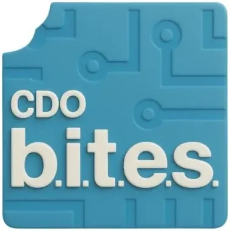

CDO BITES — CDO Business Incubation, Tech Entrepreneurship & Startups
University of Science & Technology of Southern Philippines (USTP) · Region X
CDO B.I.T.E.S. (Business Incubation, Tech Entrepreneurship & Startups) is the Technology Business Incubator (TBI) of the University of Science & Technology of Southern Philippines (USTP) in Cagayan de Oro, serving as the primary startup incubation and technology entrepreneurship platform for Northern Mindanao. As a DOST-accredited TBI, CDO B.I.T.E.S. provides structured incubation programs, mentoring, and business development support to student innovators, faculty entrepreneurs, and early-stage technology startups in Region X.
- Category
- Technology Business Incubator
- Host institution
- University of Science & Technology of Southern Philippines (USTP)
- City
- Cagayan de Oro
- Region
- Region X
- Operating status
- Operating
About the Center
Housed within USTP — one of the Philippines' premier science and technology universities — CDO B.I.T.E.S. draws on USTP's technical depth, research infrastructure, and industry partnerships to accelerate startups from ideation through commercialization. The hub is a core component of USTP's innovation ecosystem alongside the Northern Mindanao Food Innovation Center (NMFIC) and Design Engineering & Fabrication Laboratory (DEFL), enabling a full spectrum of technology development and business support services for Mindanao's emerging entrepreneurs.
Programs & Services
- Startup Incubation Program — Structured incubation providing co-working space, dedicated mentoring, business coaching, and access to USTP's research and technical resources for early-stage technology and agri-tech startups in Region X
- Technology Entrepreneurship Training — Bootcamps and workshops on lean startup methodology, business model development, financial planning, intellectual property, product-market fit, and go-to-market strategy for USTP student and faculty innovators
- DOST Startup Funding Access — Guidance and end-to-end facilitation for startups applying to DOST's Startup Grant Fund (SGF), BARO (Build Around Research Output), and other government programs targeting technology-based enterprises
- Mentoring & Network Building — Curated access to a network of experienced mentors, angel investors, and corporate partners from the Northern Mindanao entrepreneurship ecosystem, CDO business community, and national startup networks
- Product Development Support — Technical collaboration with USTP's engineering, computing, and science colleges to support prototype development, software builds, testing, and iteration for incubatee startups
- Demo Days & Investor Connections — Periodic showcase events connecting CDO B.I.T.E.S. startups with investors, government commercialization programs, and corporate partners from Northern Mindanao's growing technology and agribusiness sectors
Contact
Sources & references
- cdobites.com
- ustp.edu.ph/1st-regional-innovation-summit-features-cdo-b-i-t-e-s-and-nmfic
- ustpinnovationtechsolutions.com/cdo-b-i-t-e-s
Details are drawn from public records and the sources above, July 2026.
Startupreneur Innovation Hub · synced from the Notion catalog (July 2026) · status: published.